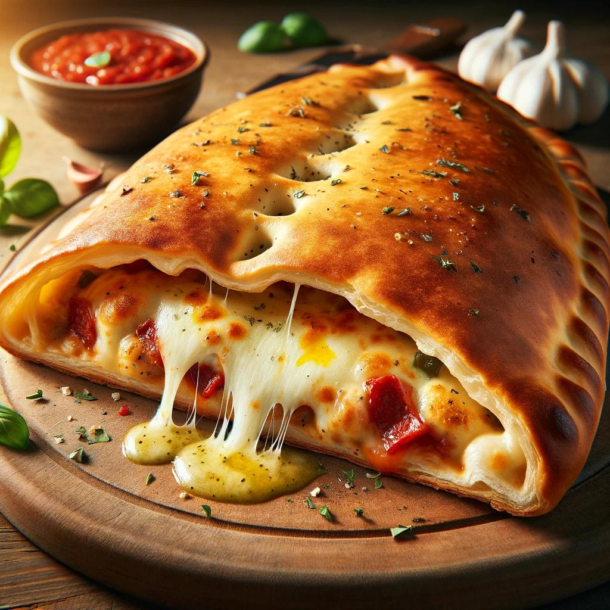

Calzone

Imagine holding a freshly baked calzone, its golden-brown crust glistening with a light brush of olive oil and a sprinkle of garlic and herbs. As you cut into the crispy exterior, a cloud of fragrant steam escapes, revealing the mouthwatering filling inside. Each bite offers a delightful mix of gooey melted mozzarella, tangy marinara sauce, and savory chunks of pepperoni, sausage, and fresh vegetables. The cheese stretches with each pull, showcasing its perfect melt. Served on a rustic wooden board with a side of marinara sauce for dipping and garnished with fresh basil leaves, this calzone promises a rich, hearty, and utterly satisfying culinary experience. It's a perfect blend of flavors and textures that will leave you craving more with every bite.